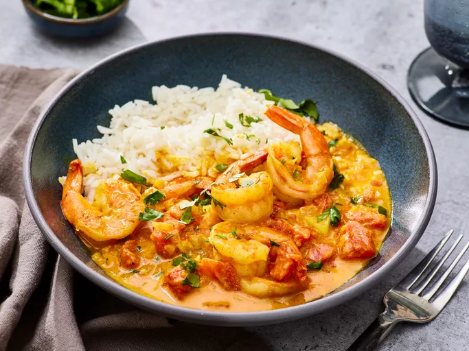

Shrimp Curry

Description
This shrimp curry recipe is a subtle yet richly flavored curry that complements prawns perfectly. It tastes wonderful and is a very easy meal to prepare when you are in a hurry. Make sure to remove the shrimp tails before adding them to the skillet. Serve with rice.
Ingridients
- peamut oil - 2 tablespoons
- sweet onion(minced) - 1 half
- cloves garlic(chopped) - 2
- ground turmeric - 1.5 teaspoons
- ground ginger - 1 teaspoon
- ground cumin - 1 teaspoon
- paprika - 1 teaspoon
- red chilli powder - half teaspoon
- tomatoes(chopped) - 1 can
- salt - 1 teaspoon
- cilantro(chopped) - 2 tablespoons
- Shrimp(cllked and peeled) - 2 tablespoons
Steps
- Gather all ingridients
- Heat peanut oil in a large skillet over medium heat; cook and stir onion in hot oil until translucent, about 5 minutes. Remove the skillet from heat and allow to cool slightly, about 2 minutes.
- Add garlic, turmeric, ginger, cumin, paprika, and chile powder to onion in the skillet; stir over low heat to bloom spices, about 30 seconds. Stir in tomatoes, coconut milk, and salt. Bring to a boil for 1 minute, then reduce heat and simmer, stirring occasionally, for 10 minutes.
- Stir in shrimp and cilantro; simmer until shrimp is warmed through, about 1 minute.
- Serve and enjoy!
Here's a recipe for Butter Chicken you might like.
Browse more recipes